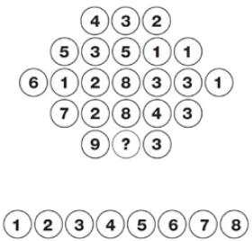

PUZZLE-1
Soru işareti yerine hangi sayı gelmelidir?

Cevap:
Soru işareti yerine gelmesi gereken sayı 6’dır. Her satırın ortasında kalan sayılar, o satırdaki diğer sayıların toplamının yarısına eşittir. Dolayısıyla 9 + 3 = 12 / 2 = 6 olur.